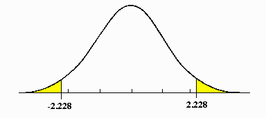

Basics of the Model
When to Use Linear Regression
You can use linear regression when:
- The outcome variable is continuous.
- The outcome variable is binary (although you may be better off using binary logistic regression).
- The outcome variable is ordinal (although you may be better off using ordinal logistic regression).
- The outcome variable is a count/rate variable (although you may be better off using negative binomial/poisson).
You should not use linear regression when:
- The outcome variable is categorical (you must use multinomial logistic regression).
- The goal is causal inference or finding a causal effect (you need a strong research design and causal identification strategy/design).
Model Specification
Let us define y as our outcome variable, and x_1, \dots, x_k as our explanatory variables. \beta_0, \dots, \beta_k are parameters of the population.
The linear regression model can be written as a conditional expectation E(y|x) function:
E(y_i|x_i) = \beta_0 + \beta_1x_{1i} + \dots + \beta_kx_{ki}
Imagine y is income, and x is age.
At age x=20, not every 20 year old makes the same amount of income. There is some distribution, with some making more, and some making less. This is the distribution y|x=20.
We can find the expected value of this distribution, E(y|x=20). This is a conditional expectation, and indicates the expected income of a 20 year old if we randomly chose one from the distribution.
At x=30, the E(y|x) probably is different (30 year olds make more money). Thus, the linear model is essentially stating that the expected y depends on x. Or in terms of this example, the expected income depends on the individual’s age.
The linear model can also be specified for any specific outcome value y_i:
y_i = \beta_0 + \beta_1x_{1i} + \dots + \beta_k x_{ki} + u_i
The u_i is called the error term. This indicates that not every value of y_i in our data will be exactly on the linear best-fit line.
Graphically, it is the highlighted part:

In social science terms, the u_i is the effect of any other variable not included in our model on y.
For example, if x is age, and y is income, we will have the following relationship:
\text{income}_i = \beta_0 + \beta_1 \text{age}_i + u_i
However, not every individual lies perfectly on this linear line. This is because there are other factors outside of age that affect y (income), and these other factors are bundled into the error term.
We can also specify the linear model in terms of linear algebra:
y = X\beta + u
- Where y, \beta, u are vectors and X is a n \times (k+1) matrix.
Start with the linear model written in terms of y_i:
y_i = \beta_0 + \beta_1x_{1i} + \dots + \beta_k x_{ki} + u_i
We can rewrite y_i to be equal to:
y_i = x_i'\beta + u_i, \text{ where }\beta = \begin{bmatrix}\beta_0 \\ \beta_1 \\ \vdots \\ \beta_k\end{bmatrix} \text{ and }x_i = \begin{bmatrix}1 \\x_{1i} \\\vdots \\x_{ki}\end{bmatrix}
Note how we have the subscript i representing each individual observation. With a vector, we can expand out these subscripts.
Using this logic, we can obtain the following, with the x_i' and \beta being vectors within a vector:
\begin{split} \begin{pmatrix}y_1 \\ y_2 \\ \vdots \\ y_n\end{pmatrix} & = \begin{pmatrix}x_1'\beta + u_1 \\ x_2'\beta + u_2 \\ \vdots \\ x_n'\beta + u_n\end{pmatrix} \\ & \\ \begin{pmatrix}y_1 \\ y_2 \\ \vdots \\ y_n\end{pmatrix}& = \begin{pmatrix}x_1'\beta \\ x_2'\beta \\ \vdots \\ x_n'\beta\end{pmatrix} + \begin{pmatrix}u_1 \\ u_2 \\ \vdots \\ u_n\end{pmatrix} \end{split}
Since \beta vector appears as a common factor for all observations i=1,...,n, we can factor it out and have an equation:
\begin{pmatrix}y_1 \\ y_2 \\ \vdots \\ y_n\end{pmatrix} = \begin{pmatrix}x_1' \\ x_2' \\ \vdots \\ x_n'\end{pmatrix} \space \beta + \begin{pmatrix}u_1 \\ u_2 \\ \vdots \\ u_n\end{pmatrix}
We can expand the x_1',...,x_n' vector into a matrix. Remember that each x_1',...,x_n' is already a vector of different explanatory variables. So, we get the following result:
y = X \beta + u, \text{ where } X = \begin{bmatrix}1 & x_{11} & \dots & x_{k1} \\1 & x_{12} & \dots & x_{k2} \\\vdots & \vdots & \vdots & \vdots \\1 & x_{1n} & \dots & x_{kn}\end{bmatrix}
Estimation
To estimate the population parameters \beta_0, \dots, \beta_k, we use our sample data, and try to find the values \widehat{\beta_0}, \dots, \widehat{\beta_k} that minimise the square sum of residuals (SSR):
\begin{split} SSR & = \sum\limits_{i=1}^n(y_i - \hat y_i)^2 \\ & = \sum\limits_{i=1}^n(y_i - \widehat{\beta_0} - \widehat{\beta_1}x_{1i} - \dots - \widehat{\beta_k}x_{ki}) \end{split}
The residuals are the difference from our predicted best-fit line result \widehat{y_i}, and the actual value of y_i in the data. Below highlighted in red are the residuals.

After we have the residual values, we simply square each of them, then sum all of them together. That is the sum of squared residuals.
This estimation is called the ordinary least squares (OLS) estimator. The solutions to the OLS estimator can be derived mathematically.
Let us define the sum of squared residuals as function S.
First, let us find the partial derivative of S in respect to \hat\beta_0. We can do this using chain rule (for each individual part of the summation) and sum rule (for the summation).
\begin{split} \frac{\partial S(\hat{\beta}_0, \hat{\beta}_1)}{\partial \hat{\beta}_0} & = \frac{\partial }{\partial \hat{\beta}_0} \left[ \sum\limits_{i=1}^n (y_i - \hat{\beta}_0 - \hat{\beta}_1x_i)^2 \right] \\ & = -2 \sum\limits_{i=1}^n (y_i - \hat{\beta}_0 - \hat{\beta}_1 x_i) \end{split}
To minimises S, we set the derivative equal to 0. We can ignore the -2, since if the summation is equal to 0, everything is 0. Thus, the first order condition is:
\sum\limits_{i=1}^n (y_i - \hat{\beta}_0 - \hat{\beta}_1 x_i) = 0
Now, let us do the same for \hat\beta_1. Using the same steps as before
\begin{split} \frac{\partial S(\hat{\beta}_0, \hat{\beta}_1)}{\partial \hat{\beta}_1} & = \sum\limits_{i=1}^n \left[ -2x_i(y_i - \hat{\beta}_0 - \hat{\beta}_1 x_i) \right] \\ & = -2 \sum\limits_{i=1}^n x_i(y_i - \hat{\beta}_0 - \hat{\beta}_1 x_i) \end{split}
The first order condition for \hat\beta_1 will be:
\sum\limits_{i=1}^n x_i(y_i - \hat{\beta}_0 - \hat{\beta}_1 x_i) = 0
We now have our two first-order conditions. Now, we have a 2-equation system of equations, with 2 variables. First, let us solve the first equation for \hat\beta_0 in terms of \hat\beta_1:
\begin{split} \sum\limits_{i=1}^n (y_i - \hat{\beta}_0 - \hat{\beta}_1 x_i) & = 0 \\ \sum\limits_{i=1}^n y_i - n \hat{\beta}_0 - \hat{\beta}_1 \sum\limits_{i=1}^n x_i & = 0 \\ -n\hat{\beta}_0 &= -\sum\limits_{i=1}^n y_i + \hat{\beta}_1\sum\limits_{i=1}^nx_i \\ \hat\beta_0 & = \frac{1}{-n} \left( -\sum\limits_{i=1}^n y_i + \hat{\beta}_1\sum\limits_{i=1}^n x_i \right) \\ \hat{\beta}_0 & = \frac{1}{n} \sum\limits_{i=1}^n y_i - \frac{1}{n}\hat{\beta}_1 \sum\limits_{i=1}^n x_i \\ \hat\beta_0& = \bar{y} - \hat{\beta}_1 \bar{x} \end{split}
Now, let us substitute our calculated \hat{\beta}_0 = \bar{y} - \hat{\beta}_1 \bar{x} into the \hat{\beta}_1 condition and solve for \hat{\beta}_1:
\begin{split} 0 & =\sum\limits_{i=1}^n x_i (y_i - \hat{\beta}_0 - \hat{\beta}_1 x_i) \\ & = \sum\limits_{i=1}^n \left[ x_i(y_i - [\bar{y} - \hat{\beta}_1\bar{x}] - \hat{\beta}_1x_i) \right] \\ & = \sum\limits_{i=1}^n \left[ x_i(y_i - \bar{y} - \hat{\beta}_1 (x_i - \bar{x})) \right] \\ & = \sum\limits_{i=1}^n \left[ x_i(y_i - \bar{y}) - x_i \hat{\beta}_1(x_i - \bar{x}) \right] \\ & = \sum\limits_{i=1}^n x_i (y_i - \bar{y}) - \hat{\beta}_1 \sum\limits_{i=1}^nx_i (x_i - \bar{x}) \end{split}
Before we finish, here are a few key properties of summation
Property 1:
\sum\limits_{i=1}^n (x_i - \bar{x}) = 0
- This is because we can expand the left to \sum x_i - \sum \bar x.
- Then, we know \sum x_i = \sum \bar x (by the formula for mean), so \sum x_i - \sum \bar x = 0.
Property 2:
\sum\limits_{i=1}^n x_i(y_i - \bar{y}) = \sum\limits_{i=1}^n(x_i - \bar{x}) (y_i - \bar{y})
- This is because on the right side can expand to \sum [x_i(y_i - \bar y) - \bar x (y_i - \bar y)].
- Then, split into \sum x_i (y_i - \bar y) - \bar x \sum (y_i - \bar y).
- We know that by property 1 (which applies to any variable), \sum (y_i - \bar y) = 0. Thus, the right side disappears, and we are left with \sum x_i (y_i - \bar y).
Property 3:
\sum\limits_{i=1}^n x_i(x_i - \bar{x}) = \sum\limits_{i=1}^n(x_i - \bar{x})^2
- Start by expanding right side to \sum [ x_i ( x_i - \bar x) - \bar x (x_i - \bar x)]
- Which splits into \sum x_i (x_i - \bar x) - \bar x \sum (x_i - \bar x)
- By the first property, we know \sum x_i - \bar x = 0, so we are only left with \sum x_i (x_i - \bar x)
Knowing properties of summation, we can transform what we had before:
\begin{split} 0 & = \sum\limits_{i=1}^n x_i (y_i - \bar{y}) - \hat{\beta}_1 \sum\limits_{i=1}^nx_i (x_i - \bar{x}) \\ 0 & = \sum\limits_{i=1}^n(x_i - \bar{x})(y_i - \bar{y}) - \hat{\beta}_1 \sum\limits_{i=1}^n (x_i - \bar{x})^2 \\ \hat{\beta}_1 \sum\limits_{i=1}^n (x_i - \bar{x})^2 & = \sum\limits_{i=1}^n(x_i - \bar{x})(y_i - \bar{y}) \\ \hat{\beta}_1 & = \frac{\sum_{i=1}^n (x_i - \bar{x})(y_i - \bar{y})}{\sum_{i=1}^n(x_i - \bar{x})^2} \end{split}
Note that the numerator is equivalent to the formula of covariance Cov(x,y), and the denominator is equal to the variance Var(x).
We found that \hat\beta_0 = \bar{y} - \hat{\beta}_1 \bar{x} earlier, so we just plug our solution of \hat\beta_1 in to get \hat\beta_0.
Let us define our estimation vector \hat{\beta} as the value of \hat\beta that minimises the sum of squared errors:
\hat{\beta} = \min\limits_{b} (y - Xb)' (y - Xb) = \min\limits_b S(b)
- (y - Xb) is our error, since \hat y = Xb,
We can expand S(b) as follows:
\begin{split} S(b) & = y'y - b'X'y - y'Xb + b'X'Xb \\ & = y'y - 2b'X'y + b'X'Xb \end{split}
Taking the partial derivative in respect to b:
\frac{\partial S(b)}{\partial b} = \begin{pmatrix}\frac{\partial S(b)}{\partial b_1} \\\vdots \\\frac{\partial S(b)}{\partial b_k}\end{pmatrix}
Differentiating with the vector b yields:
\frac{\partial S(b)}{\partial b} = -2X'y + 2X'Xb
Evaluated at \hat{\beta}, the derivatives should equal zero (since first order condition of finding minimums):
\frac{\partial S(b)}{\partial b} \biggr|_{\hat{\beta}} = -2X'y + 2X'X \hat{\beta} = 0
When assuming X'X is invertable, we can isolate \hat{\beta} to find the solution to OLS:
\begin{split} -2X'y + 2X'X \hat{\beta} & = 0 \\ 2X'X\hat\beta & = 2X'y \\ \hat\beta & = (2X'X)^{-1} 2 X'y \\ \hat\beta & = (X'X)^{-1}X'y \end{split}
With the estimated parameters \widehat{\beta_0}, \dots, \widehat{\beta_k}, we now have a best-fit line, called the fitted values:
\widehat{y_i} = \widehat{\beta_0} +\widehat{\beta_1}x_{1i}, \dots, \widehat{\beta_k}x_{ki}
Interpretation
Interpretation of Coefficients
I define \widehat{\beta_j} \in \{\widehat{\beta_1}, \dots, \widehat{\beta_k}\}. How do we interpret the \widehat{\beta_j} we have estimated?
| Continuous x_j | Binary x_j | |
| Continuous y | For every one unit increase in x_j, there is an expected \widehat{\beta_j} unit change in y. | There is a \widehat{\beta_j} unit difference in y between category x_j = 1 and category x_j = 0. |
| Binary y | For every one unit increase in x_j, there is an expected \widehat{\beta_j} \times 100 percentage point change in the probability of a unit being in category y=1. | There is a \widehat{\beta_j}\times 100 percentage point difference in the probability of a unit being in category y=1 between category x_j = 1 and category x_j = 0. |
If you have multiple explanatory variables, always add: while holding all other explanatory variables not x_j constant.
You can prove these explanations by plugging in x_i = x and x_i = x+1 and finding the change in \widehat{y_i}, or by finding the partial derivative in respect to x_j.
Interpretation of the Intercept
The intercept is \widehat{\beta_0} (the only parameter not multiplied to a explanatory variable).
| Continuous x_j | Binary x_j | |
| Continuous y | When all explanatory variables equal 0, the expected value of y is \widehat{\beta_0}. | For category x_j = 0, the expected value of y is \widehat{\beta_0} (when all other explanatory variables equal 0). |
| Binary y | When all explanatory variables equal 0, the expected probability of a unit being in category y=1 is \widehat{\beta_0} \times 100 | For category x_j = 0, the expected probability of a unit being in category y=1 is \widehat{\beta_0} \times 100 (when all other explanatory variables equal 0). |
You can prove these interpretations by plugging in x_1, \dots, x_k = 0.
Residual Standard Deviation
Residuals, as discussed in the estimation section, are:
\widehat{u_i} = y_i - \widehat{y_i}
Or in other words, the distance of the actual value y_i of observation i, compared to the predicted \widehat{y_i} from our fitted values/best-fit line.
The residual standard deviation \hat\sigma measures the spread/variance of our residuals - so, how far away the actual values y_i are from our predicted values \widehat{y_i} in general for all observations.
\hat\sigma = \sqrt{Var(u_i)}

Smaller \hat\sigma mean the actual values are, on average, close to our predicted values, and larger \hat\sigma mean the actual values are, on average, further away from our predicted values.
R-Squared
R-Squared (R^2) measures the proportion of variation in y that is explained by our explanatory variables.
Let us define these three concepts: the total sum of squares (SST), explained sum of squares (SSE), and residual sum of squares (SSR):
\begin{split} & SST = \sum\limits_{i=1}^n (y_i - \bar y)^2 \\ & SSE = \sum\limits_{i=1}^n (\hat y_i - \bar y)^2 \\ & SSR = \sum\limits_{i=1}^n (\hat u_i)^2 \end{split}
- The SST explains the total amount of variation in y
- The SSE is the amount of variation in y explained by our model
- The SSR is the amount of variation in y not explained by our model
Let us look at the total sum of squares (SST). We can manipulate it as follows:
\begin{split} SST & = \sum\limits_{i=1}^n (y_i - \bar y)^2 \\ & = \sum\limits_{i=1}^n(y_i - \hat y_i+ \hat y_i - \bar y)^2 \\ & = \sum\limits_{i=1}^n((y_i - \hat y_i)+ \hat y_i - \bar y)^2 \\ & = \sum\limits_{i=1}^n[\hat u_i + \hat y_i - \bar y]^2 \\ & = \sum\limits_{i=1}^n[\hat u_i^2 + \hat u_i \hat y_i - \hat u_i \bar y + \hat y_i \hat u_i + \hat y_i^2 - \hat y_i \bar y-\bar y \hat u_i -\bar y \hat y_i+\hat y^2_i] \\ & = \sum\limits_{i=1}^n[ \hat u_i^2 + 2 \hat u_i \hat y_i+ \hat y_i^2 - 2 \hat u_i \bar y - 2 \hat y_i \bar y + \bar y ^2] \end{split}
By a property of linear regression, \sum \hat y_i \hat u_i = 0. Knowing this, we can further simplify to:
\begin{split} SST & = \sum\limits_{i=1}^n[ \hat u_i^2 + \hat y_i^2 - 2 \hat u_i \bar y - 2 \hat y_i \bar y + \bar y ^2] \\ & = \sum\limits_{i=1}^n[\hat u_i^2 + (\hat y_i - \bar y)^2]\\ & = \sum\limits_{i=1}^n \hat u_i^2 + \sum\limits_{i=1}^n(\hat y_i - \bar y)^2 \\ & = SSE + SSR \end{split}
This makes sense: After all, SSE is the squared errors explained by the model, and SSR is the residual (non-explained) parts of the model, so together, they should be equal to the total sum of squares.
Thus, R-squared should naturally be defined as:
R^2 = \frac{SSE}{SST} = \frac{1 - SSR}{SST}
R-Squared is always between 0 and 1 (or 0-100 as a percentage). Higher values indicate our model better explains the variation in y.
Interpreting R-squared: The Model explains R^2 \times 100 percent of the variation in y.
Statistical Inference
Heteroscedasticity and Standard Errors
Homoscedasticity is defined as:
Var(u|x_1, \dots, x_k) = \sigma^2, \ \forall x
- Or in other words, no matter the values of any explanatory variable, the error term variance is constant.
- If this is false, then we have heteroscedasticity.
An easy way to identify homoscedasticity is to look at a residual plot (just the plot of all \widehat{u_i}):

Notice how the homoscedasticity residuals seem to have the same up-down variance, no matter the value of x.
The heteroscedasticity residuals have a clear pattern - the up-down variance is smaller when x is smaller, and the up-down variance is larger when x is larger.
Essentially, if you see a pattern in the residual plot, it is likely heteroscedasticity.
If you have homoscedasticity, you should use normal OLS standard errors.
If you have heteroscedasticity, you should use robust OLS standard errors. You should also use robust standard errors if you are not sure which errors to use.
Standard errors can be mathematically derived (this is shown in the OLS estimator notes in the econometrics/causal inference section).
T-Tests
In regression, our typical hypotheses are:
- H_0 : \beta_j = 0 (i.e. there is no relationship between x_j and y).
- H_1:\beta_j ≠ 0 (i.e. there is a relationship between x_j and y).
Using the standard error (see above), we calculate the t-statistic, and using the t-statistic, we calculate a p-value.
First, we calculate the t-test statistic:
t = \frac{\widehat{\beta_1} - H_0}{\widehat{se}(\widehat{\beta_1})}
- Where H_0 is typically 0, but if you do decide to alter the null hypothesis, you would plug it in.
Now, we consult a t-distribution of n-k-1 degrees of freedom. We use a t-distribution because the standard error calculation used in OLS is slightly imprecise.
- Note: we can only do this step if we believe the central limit theorem is met (that our errors are asymptotically normal). We need a large enough sample size.
We start from the middle of the t-distribution, and move t-test-statstic number of standard deviations from both sides of the middle.
Then, we find the probability of getting a t-test statistic even further from the middle than the one we got. The area highlighted in the figure below showcases this. In the figure, the t-test statistic is 2.228.

The area highlighted, divided by the entire area under the curve, is the p-value.
The p-value we get is the probability of getting a test statistic equally or more extreme than the one we got, given the null hypothesis is true.
If p<0.05, we believe the probability of a null hypothesis is low enough, such that we reject the null hypothesis (that there is no relationship between x and y), and conclude our alternate hypothesis (that there is a relationship between x and y).
If p > 0.05, we cannot reject the null hypothesis, and cannot reject that there is no relationship between x and y.
NOTE: this is not causality - we are only looking at the relationship. Causality needs to be established with an adequate research design.